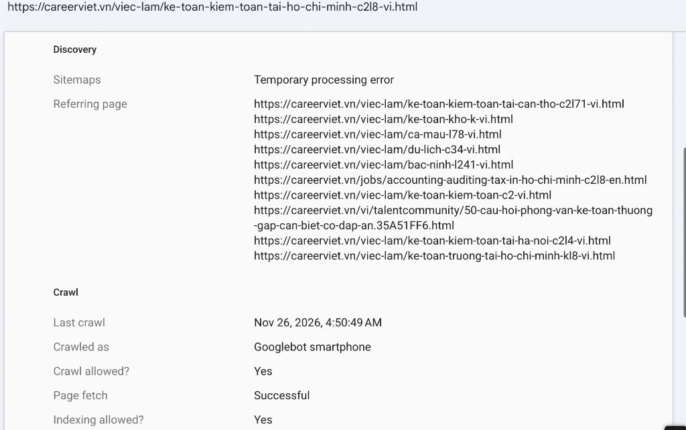
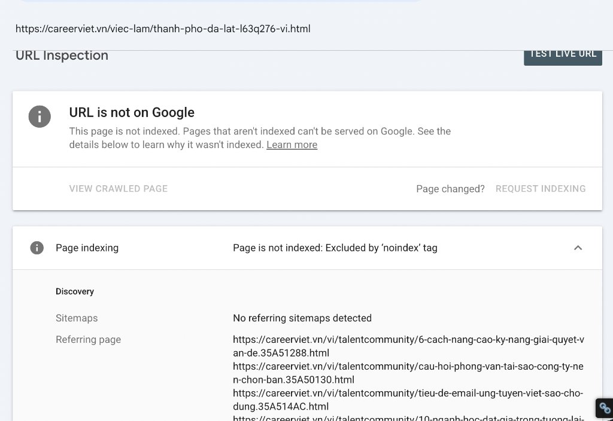
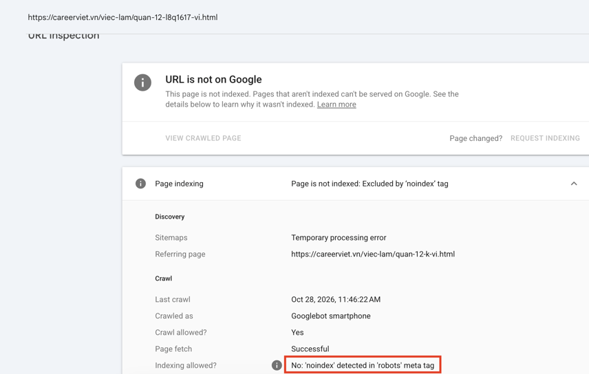

CareerViet: các lỗi kỹ thuật cần sửa trên trang Job Listing và toàn site
Tài liệu xếp các lỗi theo mức ảnh hưởng tới Google khi đọc và lập chỉ mục trang, lỗi nặng nhất ở trên. Mỗi lỗi có bốn phần: hiện trạng đo được, tác động, cách sửa kèm mẫu code trước và sau, và tiêu chí nghiệm thu để đội Dev tự đo bằng curl.
- Hầu hết trang Job Listing có nhiều tin đều nặng 2,66–4,22 MB (kể cả trang việc làm theo công ty có nhiều tin như Masan Consumer 2,73 MB; chỉ trang Hồ sơ công ty
/nha-tuyen-dung/1,33 MB và trang rất ít tin dưới ~1,75 MB mới nằm dưới trần). Googlebot chỉ đọc 2 MB đầu, nên ở mẫu kiểm tra trên Search Console trang Kế toán tại Hồ Chí Minh không có thẻ H1 và không có tin tuyển dụng nào, và tình trạng cắt ngưỡng này xảy ra trên phần lớn các nhóm Job Listing (ngành, tỉnh, quận, từ khoá). - Giảm dung lượng là chưa đủ. Sau khi trang nhẹ lại, Google sẽ đọc được phần thân trang và gặp các lỗi nằm sẵn ở đó: title, robots, canonical nằm ngoài
<head>, H1 thiếu tên ngành và tỉnh, phân trang không có link. - Các lỗi này cần đi chung một đợt sửa. Phần còn lại (robots.txt, không gian URL, schema, cache) xếp ở đợt 2 và đợt 3.
Cách đọc tài liệu và phạm vi đo
- P0 đang làm Google không đọc được nội dung chính. P1 làm Google đọc sai, tốn lượt crawl hoặc không tìm ra trang. P2 là lỗi nhỏ, sửa kèm khi chạm tới.
- Biểu tượng iVí dụ: di chuột hoặc bấm vào biểu tượng này để đọc phần giải thích thuật ngữ hoặc nguồn tài liệu. mở phần giải thích. Khung viền vàng "Cần bổ sung dữ liệu" đánh dấu chỗ GTV chưa đủ số liệu để kết luận, kèm thứ cần làm để có số liệu đó.
- Khung có dấu + chứa số đo chi tiết và lệnh kiểm. Bấm để mở.
- Phép đo trực tiếp: ngày 26/11/2026, từ 11:54 đến 12:33 (giờ Việt Nam), tải HTML bằng
curlvới User-Agent của Googlebot Smartphone, từ một máy tại Việt Nam. Vị trí byte tính trên HTML đã giải nén, chỉ đếm thẻ nằm ngoài<script>và<svg>. - Số liệu Google Search Console: báo cáo Crawl Stats khoảng 90 ngày tính đến 24/11/2026 và công cụ Kiểm tra URL ngày 26/11/2026 của property
careerviet.vn. - Giới hạn: GTV không có log máy chủ. Các phép đo dùng User-Agent giả lập, nên phản hồi mà Googlebot thật nhận có thể khác ở lớp cache. Mục 13 liệt kê từng điểm cần CareerViet kiểm lại bằng log.
Bảng tổng hợp theo thứ tự ưu tiên
| # | Lỗi | Mức | Phạm vi | Đội phụ trách | Đợt | Mục trong checklist kỹ thuật đã gửi |
|---|---|---|---|---|---|---|
| 1 | HTML Job Listing nặng 2,7–4,2 MB, Google mất H1 và danh sách tin | P0 | Hầu hết Job Listing (trừ trang rất ít tin & Hồ sơ công ty /nha-tuyen-dung/) | Backend + Frontend | 1 | Mới |
| 2 | Title, robots, canonical, hreflang nằm ngoài <head> | P0 | Listing ngành × tỉnh, quận, từ khoá × tỉnh, trang N, sort | Frontend | 1 | Mới |
| 3 | H1 trong HTML máy chủ thiếu ngành, tỉnh, quận | P1 | Mọi Listing trừ từ khoá và công ty | Frontend | 1 | 17, 19 |
| 4 | Phân trang không có link, trang N khai là bản trùng trang 1 | P1 | Mọi Listing trên 50 tin | Frontend | 1 | 2, 14 |
| 5 | Trang quận/huyện và ngành × tỉnh thiếu đường vào | P1 | Nhóm -lq, -cNlN | Frontend + Backend | 2 | 3, 21 |
| 6 | URL không có nội dung vẫn trả 200 và cho index | P1 | Trang từ khoá, ID sai, trang lỗi | Backend | 2 | 5, 6, 7, 10, 15 |
| 7 | robots.txt không có hiệu lực với Googlebot | P1 | Toàn site | DevOps + Frontend | 2 | 1, 4 |
| 8 | Thời gian phản hồi HTML 1.090 ms, cache cho bot hết hạn nhanh | P1 | Toàn bộ HTML | DevOps | 2 | Mới |
| 9 | Schema JobPosting và bản tiếng Anh của trang tin | P1 | Mọi trang Job Detail | Backend | 3 | 9, 23 |
| 10 | Breadcrumb trong JSON-LD trỏ tới trang lỗi, sai tên | P2 | Listing và Job Detail | Backend | 3 | 24 |
| 11 | Các lỗi nhỏ sửa kèm | P2 | Nhiều nơi | Tuỳ mục | 3 | 22 và các mục khác |
P01. HTML Job Listing nặng 4,1 MB, Google mất H1 và 50 tin
c2l8 4,15 MB mất H1 và cả 50 tin; chỉ trang rất ít tin hoặc Hồ sơ công ty /nha-tuyen-dung/ 1,33 MB chưa vượt mốc).Giải thích nhanh ba khái niệm
1. HTML uncompressed > 2 MB là gì?
Giống như một thùng hàng ép chân không: khi truyền qua mạng bằng nén Gzip, trang c2l8 chỉ nặng 1,32 MB. Nhưng Googlebot nhận xong phải giải nén thành văn bản thuần (uncompressed) thì file phình ra 4,15 MB. Vì giới hạn 2 MB tính trên bản đã giải nén, toàn bộ thẻ H1 và 50 tin việc làm ở vùng byte 3,74–4,15 MB bị cắt mất.
Nguyên nhân 1: Dữ liệu AI Vector (2,08 MB)
Hãy hiểu đơn giản: CareerViet dùng AI để phân tích mức độ giống nhau giữa các công việc, kỹ năng và chức danh. Ví dụ:
- Kế toán tổng hợp
- Kế toán trưởng
- Nhân viên kiểm toán
Hệ thống đổi những nội dung này thành các dãy số để máy tính so sánh (gọi là Vector Embedding), gồm hai trường job_title_embed và job_tag_embed (1.024 số mỗi trường).
Vấn đề: hai trường này chỉ dùng để tính toán ở máy chủ, nhưng đang bị in 96 mảng (2,08 MB, chiếm 50,3% file) thẳng vào HTML gửi xuống trình duyệt trên trang c2l8.
Nguyên nhân 2: Bảng dịch messages (919 KB)
CareerViet dùng thư viện next-intl để quản lý chữ đa ngôn ngữ trên giao diện. Ví dụ, website cần biết:
- Nút tìm việc hiện chữ gì
- Bộ lọc ngành nghề hiện thế nào
- Thông báo khi người dùng chưa đăng nhập
- Nội dung của các công cụ khác
Những câu chữ này được gói thành các bảng dữ liệu gọi là messages.
Vấn đề: trang Job Listing chỉ cần một phần nhỏ trong đó, nhưng lại đang nhận cả bảng dịch của nhiều tính năng khác như CVHay, tạo danh thiếp, Thuế TNCN, BHXH, Gross-Net. Khối này nặng 919 KB (lên tới 1,32 MB nếu tính cả chuỗi bài viết đi ngay trước).
Nguồn tài liệu chính thức (Google và Next.js)
| Tài liệu gốc | Quy định nguyên văn | Link gốc |
|---|---|---|
| Googlebot Docs | "Googlebot crawls the first 2MB of a supported file type... Once the cutoff limit is reached, Googlebot stops the fetch... The file size limit is applied on the uncompressed data." | https://developers.google.com/search/docs/crawling-indexing/googlebot |
| Google Crawler Overview | Phân biệt trần chung 15 MB của hạ tầng và trần riêng 2 MB áp dụng cho Googlebot Search. | https://developers.google.com/crawling/docs/crawlers-fetchers/overview-google-crawlers |
| Next.js Data Security | Dữ liệu truyền từ Server Component xuống Client Component được tuần tự hoá vào HTML; cần lọc qua DTO tối giản trước khi gửi. | https://nextjs.org/docs/app/guides/data-security |
| next-intl Docs | Không đổ toàn bộ messages vào NextIntlClientProvider; cần dùng pick() theo từng nhóm trang. | https://next-intl.dev/docs/environments/server-client-components |
So sánh 8 loại trang với ngưỡng 2 MB (đo 26/11)
Mọi nhóm Job Listing nhiều tin đều vượt mốc 2 MB (phần màu đỏ chứa H1 và tin); chỉ Hồ sơ công ty (/nha-tuyen-dung/) và trang rất ít tin dưới ~1,75 MB nằm bên trái vạch đỏ.
Hiện trạng lát cắt của trang mẫu c2l8
Trang mẫu: https://careerviet.vn/viec-lam/ke-toan-kiem-toan-tai-ho-chi-minh-c2l8-vi.html, nặng 4.146.104 byte (đo 11:54 và 12:32).
messages của next-intl (919 KB)
Khối SEO cuối trang, thẻ title (vị trí trôi theo lần stream)
job_title_embed + job_tag_embed (2,08 MB, 50,3% file)
Dữ liệu chữ của 50 tin (100 KB, 2,4% file)
H1 ở byte 3.744.837, tin đầu ở 3.746.438
- Bản Google đang giữ: công cụ Kiểm tra URL cho lần crawl 04:50 ngày 26/11 trả về bản HTML có 0 thẻ H1, 0/50 link tin tuyển dụng, 0 khối phân trang. Vùng danh sách tin chỉ là khung chờ tải.
- API cũng trả vector: https://internal-api.careerviet.vn/api/v1/js/jsk/jobs/public?industry=2&location=8&limit=50 trả 2,17 MB gồm 96 mảng vector. https://internal-api.careerviet.vn/api/v1/js/jsk/jobs/similar-jobs?keyword=K%E1%BA%BF%20To%C3%A1n%20T%E1%BB%95ng%20H%E1%BB%A3p&job_ids=35C8BADF&sort=score&limit=10&location=4 trả 452 KB gồm 20 mảng.

Dung lượng và vị trí H1 trên 12 mẫu trang
Trang Job Detail không vượt 2 MB và không có vector, nhưng vẫn mang khối bảng dịch 919 KB, tức 59% dung lượng trang (xem mục 8).
Tác động
- Google không thấy tiêu đề trang và danh sách tin của Job Listing, nên trang chỉ còn phần chữ SEO cuối trang để xếp hạng.
- Job Listing không còn truyền link nội bộ tới trang Job Detail.
- Trong Crawl Stats, HTML chiếm 21% số lượt crawl nhưng 68% dung lượng tải (10,7 TB trên 15,7 TB). Người dùng và các bot khác vẫn tải đủ 4,1 MB cho mỗi trang.
Việc cần sửa
- Bỏ hai trường vector (
job_title_embed,job_tag_embed) khỏi phản hồi của API (jobs/public,similar-jobs) và lọc bỏ ở tầng lấy dữ liệu Next.js trước khi gửi xuống trình duyệt. Trước khi xoá, rà lại mã nguồn xem có thành phần giao diện nào đang đọc hai trường này không. - Chỉ nạp bảng dịch đúng theo từng nhóm trang. Ở layout gốc đặt
messages={null}rồi dùngpick()nạp riêng nhóm chữ cần thiết cho từng routeiĐây là cách tài liệu next-intl mô tả. Mặc địnhNextIntlClientProvidergửi mọi messages xuống client. Nếu chỉ loại vài namespace nặng, namespace thêm sau này sẽ lại làm trang phình ra. Xem tài liệu, hoặc dùngomit()bỏ trước các nhóm nặng của công cụ khác. Áp cách này cho cả trang Job Detail. - Thêm bước kiểm dung lượng HTML vào CI để phát hiện sớm nếu file vượt trần sau các đợt cập nhật mới.
Tiêu chí nghiệm thu
- HTML sau giải nén nằm dưới 2 MB, mục tiêu khoảng 0,74–1,14 MB theo từng loại trang (0 chuỗi
job_title_embed,job_tag_embed). - H1 và link tin đầu tiên nằm trước byte 800.000.
- Link tin thứ 50 nằm trước byte 1.500.000.
- Test Live URL trên Google Search Console nhận đủ H1 và 50 link tin tuyển dụng.
Chỉ bỏ vector là chưa đủ. Bỏ hai mảng vector đưa trang c2l8 về 2.062.386 byte, H1 về byte 1.661.119, nhưng 7 tin cuối (44 đến 50) vẫn nằm sau mốc 2 MB. Sau khi tách tiếp bảng dịch ở bước 2, trang còn khoảng 0,74 đến 1,14 MB.
Gỡ job_title_embed và job_tag_embed ngay tại API backend internal-api, đồng thời lọc lại ở hàm lấy dữ liệu Next.js trước khi trả xuống giao diện. Cách này giảm ngay 2,08 MB trong HTML trang Listing và giảm 452 KB trên API tin tương tự.
export async function fetchListingJobs(params) {
const res = await internalJobService.search(params);
// Trả nguyên object gồm 1.024 số vector mỗi tin return res;}export async function fetchListingJobs(params) {
const res = await internalJobService.search(params);
const rows = (res?.data ?? []).map( ({ job_title_embed, job_tag_embed, ...job }) => job ); return { ...res, data: rows };}Tại layout gốc, đặt messages={null} và chỉ nạp đúng nhóm chữ cần dùng bằng pick() ở từng nhóm trang. Nếu muốn tránh sót chữ dùng chung trong giai đoạn đầu, đội Dev có thể dùng omit() bỏ trước các nhóm nặng của công cụ khác (CVHay, Danh thiếp, Thuế TNCN, BHXH, Gross-Net).
import { NextIntlClientProvider } from 'next-intl';
import { getMessages } from 'next-intl/server';
export default async function RootLayout({ children, params }) {
const messages = await getMessages(); return (
<NextIntlClientProvider locale={params.locale} messages={messages}> {children}
</NextIntlClientProvider>
);
}import { NextIntlClientProvider } from 'next-intl';
import { getMessages } from 'next-intl/server';
import pick from 'lodash/pick';
export default async function RootLayout({ children }) {
return (
<NextIntlClientProvider messages={null}> {children}
</NextIntlClientProvider>
);
}
// Trong layout của route Job Listing:
export async function ListingLayout({ children }) {
const all = await getMessages(); const scoped = pick(all, ['common', 'listing', 'filters']); return (
<NextIntlClientProvider messages={scoped}>{children}</NextIntlClientProvider> );
}Lệnh tự kiểm cho đội Dev (đã tránh dương tính giả trong script và SVG)
UA='Mozilla/5.0 (Linux; Android 6.0.1; Nexus 5X Build/MMB29P) AppleWebKit/537.36 (KHTML, like Gecko) Chrome/141.0.0.0 Mobile Safari/537.36 (compatible; Googlebot/2.1; +http://www.google.com/bot.html)'
URL='https://careerviet.vn/viec-lam/ke-toan-kiem-toan-tai-ho-chi-minh-c2l8-vi.html'
curl -s --compressed -A "$UA" "$URL" -o page.html
wc -c page.html # dung lượng đã giải nén
LC_ALL=C grep -c 'job_title_embed' page.html # phải bằng 0
python3 -c "import re;b=re.sub(rb'<(script|svg)\b.*?</\1>',lambda m:b' '*len(m.group(0)),open('page.html','rb').read(),flags=re.S|re.I);print([(t.decode(),b.find(t)) for t in (b'</head>',b'<title',b'<h1')])"Lưu ý: trang c2l8 nhúng 151 thẻ <svg> trực tiếp trong HTML và nhiều chuỗi dữ liệu trong <script>. Nếu chỉ chạy grep -ob '<title' thô, bất kỳ biểu tượng <svg> nào có thẻ <title> trợ năng ở đầu trang đều gây dương tính giả. Lệnh python3 -c ở trên thay <script> và <svg> bằng khoảng trắng cùng độ dài trước khi đo, nên giữ nguyên đúng vị trí byte thật trong file để đưa thẳng vào CI.
Ghi chú về con số "2 MB"
Tài liệu Google ghi "2MB" và không nêu số byte chính xác. Bản HTML mà Search Console lưu cho lần crawl 04:50 dài 2.023.050 byte: đó là HTML sau khi Google phân tích, có thêm khoảng 10,6 KB thẻ ở <head> và 18,5 KB script do Tag Manager chèn ở cuối. Dữ liệu gốc dừng giữa mảng vector của tin thứ 11. Quy về file gốc, điểm dừng nằm quanh byte 1.994.000. Tài liệu này dùng mốc 2.000.000 byte và đặt tiêu chí nghiệm thu thấp hơn hẳn mốc đó.
P02. Title, robots, canonical, hreflang nằm ngoài <head>
<head>. Máy chủ gửi chúng vào giữa hoặc cuối <body>, vị trí đổi theo từng lần tạo trang, có lần nằm sau mốc 2 MB. Lỗi này tách khỏi lỗi dung lượng ở mục 1 và không tự hết khi trang nhẹ lại.Hiện trạng
Thẻ </head> đóng ở byte 10.415 khi cụm metadata bị đẩy xuống <body>, và ở khoảng byte 14.041–14.313 khi cụm thẻ này nằm đúng trong <head>. Vị trí thẻ <title> đo được:
- Thẻ
meta robots,link canonicalvà 3 thẻhreflangluôn đi liền sau<title>, nên cùng chung vị trí. - Trong bản HTML mà Search Console lưu cho trang c2l8 (lần crawl 04:50), title nằm ở byte 1.563.423 và canonical ở 1.564.330, đều sau
</head>. - Sau khi chạy JavaScript trên Chrome, thẻ title của c2l8 vẫn nằm trong
<body>(byte 2.007.790 của DOM). - Cùng một URL có thể cho kết quả khác nhau giữa hai lần đo. Vì vậy loại trang nào dùng chung route Job Listing cũng cần kiểm.
Vì sao có hiện tượng này
Next.js từ bản 15.2 có tính năng "streaming metadata": khi generateMetadata chưa xong lúc bắt đầu gửi trang, các thẻ metadata được gửi sau và gắn vào <body>iTài liệu Next.js: "When generateMetadata resolves, the resulting metadata tags are appended to the <body> tag." Next.js chỉ đưa metadata về <head> cho các bot trong danh sách htmlLimitedBots. Xem tài liệu. Googlebot không nằm trong danh sách bot mặc định được nhận metadata trong <head>.
Phép thử đối chứng: cùng URL quận (https://careerviet.vn/viec-lam/thanh-pho-da-lat-l63q276-vi.html và https://careerviet.vn/viec-lam/huyen-cu-chi-l8q1635-vi.html), gọi bằng User-Agent facebookexternalhit (có trong danh sách mặc định) thì title nằm trong <head> ở byte 10.290, 2 trên 2 lần.
Tài liệu Next.js ghi rằng Googlebot chạy JavaScript và đọc được metadata gắn vào <body>. Điều đó chỉ đúng khi cả file tới được bước render. Ở đây các thẻ nằm sau mốc 2 MB trong nhiều lần đo, tức phần Google không đọc. Với canonical và hreflang, tài liệu của Google yêu cầu thẻ nằm trong <head>.
Lớp cache dành cho bot (header X-Bot-Cache) lưu nguyên bản của lần tạo trang đầu và phát lại cho mọi bot tới khi hết hạn. Một lần tạo trang có metadata nằm cuối file vì vậy được phát lại nhiều lần.
Tác động
- Google chỉ nhận thẻ canonical khi thẻ nằm trong
<head>iTài liệu Google: "The rel="canonical" link element is only accepted if it appears in the <head> section of the HTML." Thẻ hreflang cũng được yêu cầu nằm trong <head>. Xem tài liệu. Theo tài liệu này, canonical của trang 2, trang sort, URL trùng có thể không được tính, và các bản trùng không gộp tín hiệu về trang gốc. - Lần nào các thẻ rơi sau mốc 2 MB, Google không thấy title, robots, canonical và hreflang của trang đó.
- Trang quận Đà Lạt đang bị Search Console báo "Excluded by 'noindex' tag" dù trang hiện khai
index, follow(mục 5). GTV chưa chứng minh được hai lỗi này liên quan, nhưng đây là giả thuyết cần loại trừ đầu tiên.
Việc cần sửa
- Trong
next.config, thêm Googlebot và các bot tìm kiếm vàohtmlLimitedBotsiCấu hình này nhận một biểu thức chính quy khớp User-Agent. Đặt/.*/để tắt streaming metadata cho mọi trình duyệt; cách này có thể làm chậm byte đầu tiên, nên đo TTFB trước và sau. Xem tài liệu, hoặc bỏ lệnh chờ chậm tronggenerateMetadatacủa route Job Listing. - Sau khi đẩy cấu hình
htmlLimitedBotslên máy chủ, xoá sạch bộ nhớ đệmX-Bot-Cache(purge cache) để không phát lại bản cũ còn metadata nằm trong<body>, và chỉ lưu cache khi mã trả về là200.
Tiêu chí nghiệm thu
- Với User-Agent Googlebot Smartphone, trên 8 loại trang, mỗi trang gọi 5 lần (cả lúc
X-Bot-Cachelà MISS và HIT): vị trí của<title>,meta robots,link canonicalvà 3hreflangđều nhỏ hơn vị trí</head>và nhỏ hơn 20.000. - Kiểm tra URL của trang c2l8 hiện đúng URL ở dòng "User-declared canonical".
Thêm biểu thức khớp Googlebot và các bot tìm kiếm vào htmlLimitedBots trong next.config.js để Next.js chờ generateMetadata xong trước khi đóng </head>. Sau khi deploy, purge toàn bộ X-Bot-Cache thay vì bắt proxy phải quét nội dung HTML 1–4 MB.
// next.config.js: thiếu htmlLimitedBots
module.exports = {
images: { unoptimized: false },
};
// HTML trả về cho Googlebot:
</head><body>...<!-- ở byte 1,55 MB hoặc 4,14 MB --><title>Tuyển dụng 828 việc làm...</title><link rel="canonical" href="https://careerviet.vn/..."/>// next.config.js (Next.js 15.2+)
module.exports = {
htmlLimitedBots: /Googlebot|Bingbot|Applebot|GPTBot|ClaudeBot|facebookexternalhit/i,};
// HTML trả về (kèm bước purge X-Bot-Cache sau deploy):
<head>... <title>Tuyển dụng 828 việc làm...</title> <meta name="robots" content="index, follow"/> <link rel="canonical" href="https://careerviet.vn/..."/></head><body>...P13. H1 trong HTML máy chủ thiếu ngành, tỉnh, quận
-k (gồm -kl, -kc) lại bị cắt thiếu phần ngày cập nhật. Sau khi sửa mục 1, đây là H1 mà Google sẽ đọc trên hàng nghìn trang, nên cần sửa cùng đợt theo mẫu chuẩn kèm mới nhất dd/mm/yyyy.<div class="job-found-amout">
<h1>828 việc làm theo ngày cập nhật mới nhất</h1></div><h1>828 việc làm Kế toán / Kiểm toán tạiHồ Chí Minh theo ngày cập nhật mới nhất</h1>
Lưu ý về nhóm URL từ khoá (-k): hiện trạng H1 ở các URL có mã -k, -kl, -kc đang bị cắt thiếu phần "ngày cập nhật mới nhất" (ví dụ ke-toan-truong-k chỉ hiện "755 việc làm Kế toán trưởng", còn kl8 sau khi chạy JavaScript cũng chỉ hiện "40 việc làm Dược sĩ tại Hồ Chí Minh"). Cần chuẩn hoá đồng nhất thành cụm mới nhất dd/mm/yyyy (ví dụ mới nhất 26/11/2026) trên tất cả nhóm trang.
H1 đo được trên 13 loại trang
| Loại trang | URL đo trực tiếp | H1 trong HTML máy chủ | Thông tin còn thiếu |
|---|---|---|---|
Ngành × tỉnh c2l8 | https://careerviet.vn/viec-lam/ke-toan-kiem-toan-tai-ho-chi-minh-c2l8-vi.html | 828 việc làm theo ngày cập nhật mới nhất | Kế toán / Kiểm toán, Hồ Chí Minh |
Tỉnh l8 | https://careerviet.vn/viec-lam/ho-chi-minh-l8-vi.html | 6,373 việc làm theo ngày cập nhật mới nhất | Hồ Chí Minh |
Tỉnh l4 | https://careerviet.vn/viec-lam/ha-noi-l4-vi.html | 4,432 việc làm theo ngày cập nhật mới nhất | Hà Nội |
Quận l8q1635 | https://careerviet.vn/viec-lam/huyen-cu-chi-l8q1635-vi.html | 153 việc làm theo ngày cập nhật mới nhất | Huyện Củ Chi, Hồ Chí Minh |
Quận l63q276 | https://careerviet.vn/viec-lam/thanh-pho-da-lat-l63q276-vi.html | 23 việc làm theo ngày cập nhật mới nhất | Thành phố Đà Lạt |
Ngành c2 | https://careerviet.vn/viec-lam/ke-toan-kiem-toan-c2-vi.html | 1,777 việc làm theo ngày cập nhật mới nhất | Kế toán / Kiểm toán |
Ngành c26 | https://careerviet.vn/viec-lam/dau-khi-c26-vi.html | 72 việc làm theo ngày cập nhật mới nhất | Dầu khí |
Ngành × cấp bậc c2e3 | https://careerviet.vn/viec-lam/ke-toan-kiem-toan-c2e3-vi.html | 1,368 việc làm theo ngày cập nhật mới nhất | Kế toán / Kiểm toán, Nhân viên |
Hai ngành c2,19 | https://careerviet.vn/viec-lam/ke-toan-kiem-toan-c2,19-vi.html | 4,721 việc làm theo ngày cập nhật mới nhất | Kế toán / Kiểm toán, Ngân hàng |
Từ khoá × tỉnh kl8 | https://careerviet.vn/viec-lam/duoc-si-tai-ho-chi-minh-kl8-vi.html | 40 việc làm Dược sĩ | tại Hồ Chí Minh và bị cắt thiếu phần ngày cập nhật (cần chuẩn mới nhất dd/mm/yyyy) |
Từ khoá × ngành kc19 | https://careerviet.vn/viec-lam/ke-toan-truong-kc19-vi.html | 63 việc làm Kế toán trưởng | ngành Ngân hàng và bị cắt thiếu phần ngày cập nhật (cần chuẩn mới nhất dd/mm/yyyy) |
Tiếng Anh c2l8 | https://careerviet.vn/jobs/accounting-auditing-in-ho-chi-minh-c2l8-en.html https://careerviet.vn/jobs/accounting-auditing-tax-in-ho-chi-minh-c2l8-en.html | 828 jobs base on the update date | Accounting / Auditing, Ho Chi Minh City. Câu sai ngữ pháp |
Từ khoá -k, công ty -p | https://careerviet.vn/viec-lam/ke-toan-truong-k-vi.html https://careerviet.vn/viec-lam/masan-consumer-p35A4FED8-vi.html | 755 việc làm Kế toán trưởng · Tuyển dụng 25 việc làm tại Masan Consumer MỚI 11/2026 | URL có mã -k bị cắt thiếu phần ngày cập nhật (mới nhất dd/mm/yyyy) và lệch số tin với title (mục 11); nhóm -p đã đủ tên và mốc tháng |
Tác động
H1 là một trong các nguồn Google dùng để tạo tiêu đề hiện trên kết quả tìm kiếm và hiểu chủ đề trangiTài liệu Google về title link: Google dùng nhiều nguồn, trong đó có "the main visual title, heading elements", và khuyên đặt tên trang trong thẻ H1 đầu tiên nhìn thấy được. Xem tài liệu. H1 giống nhau giữa mọi trang ngành, tỉnh, quận làm các trang này khó phân biệt với nhau.
Việc cần sửa
- Dựng H1 ở máy chủ từ cùng dữ liệu với
<title>: ngành, tỉnh, quận, cấp bậc, từ khoá. - Client không ghi đè H1 bằng nội dung khác.
- Chuyển cụm "theo ngày cập nhật mới nhất" thành dạng
mới nhất dd/mm/yyyy(ví dụ "mới nhất 26/11/2026") và cập nhật đồng nhất ở mọi nhóm trang, gồm cả nhóm có mã-k,-kl,-kcđang bị cắt thiếu phần này.
Tiêu chí nghiệm thu
- Trên 13 loại trang ở bảng trên, H1 trong HTML
curlchứa đủ tên ngành, tỉnh, quận có trong<title>và có cụmmới nhất dd/mm/yyyyđồng nhất (cả ở nhóm-k,-kl,-kc). - H1 trước và sau khi JavaScript chạy giống nhau.
- Console không báo lỗi hydration ở H1.
Tạo một hàm dùng chung trên Server Component để dựng tiêu đề từ biến ngành, tỉnh, quận, cấp bậc, từ khoá và ngày cập nhật. Cả generateMetadata lẫn thẻ <h1> đều gọi hàm này, chuẩn hoá cụm cuối thành "mới nhất dd/mm/yyyy" đồng nhất cho mọi nhóm trang và không để Client Component ghi đè.
export default function ListingHeader({ total }) {
return (
<div className="job-found-amout">
<h1>{total} việc làm theo ngày cập nhật mới nhất</h1> </div>
);
}export function buildListingH1({ total, industry, location, district, keyword, updatedDate, page }) { const parts = [`${total.toLocaleString('en-US')} việc làm`]; if (keyword) parts.push(keyword); if (industry) parts.push(industry.name); if (district) parts.push(`tại ${district.name}, ${location.name}`); else if (location) parts.push(`tại ${location.name}`); if (updatedDate) parts.push(`mới nhất ${updatedDate}`); if (page > 1) parts.push(`- Trang ${page}`); return parts.join(' ');}P14. Phân trang không có link, trang N khai là bản trùng trang 1
<a> không có href, cả trong HTML máy chủ và sau khi JavaScript chạy. Google chỉ đi theo thẻ <a> có hrefiTài liệu Google: "Generally, Google can only crawl your link if it's an <a> HTML element with an href attribute." và "Google's crawlers don't click buttons". Xem tài liệu. Trang c2l8 có 828 tin nhưng Job Listing chỉ dẫn link tới 50 tin.
Hiện trạng trên ba URL mẫu của c2l8
| URL | Mã trả về | Số tin | Canonical | Robots | Title và H1 |
|---|---|---|---|---|---|
| https://careerviet.vn/viec-lam/ke-toan-kiem-toan-tai-ho-chi-minh-c2l8-trang-2-vi.html | 200 | 50, không trùng tin nào với trang 1 | Trỏ về trang 1 | index, follow | Giống hệt trang 1 |
| https://careerviet.vn/viec-lam/ke-toan-kiem-toan-tai-ho-chi-minh-c2l8-trang-17-vi.html (trang cuối) | 200 | 28 | Trỏ về trang 1 | index, follow | Giống hệt trang 1 |
| https://careerviet.vn/viec-lam/ke-toan-kiem-toan-tai-ho-chi-minh-c2l8-trang-999-vi.html (không có thật) | 200 | 0 | Trỏ về trang 1 | index, follow | H1 ghi "828 việc làm…" |
Không trang nào có rel="next" hay rel="prev". Google không còn dùng hai thẻ này, nên không cần thêm.
Tác động
- Googlebot không có đường HTML nào từ trang 1 sang trang 2. Với c2l8, 778 trên 828 tin (94%) không nhận link nội bộ từ Job Listing. Google hiện tìm các tin này qua sitemap tin tuyển dụng: 128 trên 128 mã tin GTV lấy mẫu có trong sitemap.
- Trang 2 trở đi tự khai là bản trùng của trang 1 dù nội dung khác. Google khuyên mỗi trang trong chuỗi phân trang có canonical riêngiTài liệu Google: "Don't use the first page of a paginated sequence as the canonical page. Instead, give each page its own canonical URL." Các trang trong chuỗi được phép dùng chung title và description. Xem tài liệu.
- Số trang vượt giới hạn trả 200 và cho index, tạo trang rỗng nặng 1,49 MB.
- Trong mẫu URL của Crawl Stats, khoảng 5,7% URL HTML là trang phân trang, sâu nhất tới trang 22. Googlebot vẫn tải các URL này dù chúng tự khai là bản trùng.
Việc cần sửa
- Render
<a href>thật cho từng số trang và nút trước, sau, ngay trong HTML máy chủ. - Trang N có canonical trỏ về chính nó. Title và H1 thêm "Trang N".
- N lớn hơn tổng số trang: trả 404.
Tiêu chí nghiệm thu
curltrang c2l8 có ít nhất 5 thẻ<a href>khớp-trang-\d+-vi.html.- Trang
-trang-2có canonical bằng chính URL của nó. - Trang
-trang-999trả 404.
Chuyển khối phân trang sang thẻ <nav class="pagination"> với <a href> thật ngay từ HTML máy chủ, để Googlebot lần theo tới các trang sau. Song song, đặt canonical của trang N trỏ về chính nó và gọi notFound() khi số trang vượt quá tổng số trang có tin.
<div class="pagination"><ul>
<li class="active">
<a tabindex="0" role="button">1</a></li> <li><a role="button" tabindex="0">2</a></li> <li><a role="button" tabindex="0">3</a></li></ul></div>
<!-- trang 2 & 999 đều trả 200 + canonical trang 1 --><nav class="pagination" aria-label="Phân trang"><ul>
<li class="active"><a aria-current="page"
href="/viec-lam/ke-toan-kiem-toan-tai-ho-chi-minh-c2l8-vi.html">1</a></li> <li><a href="/viec-lam/ke-toan-kiem-toan-tai-ho-chi-minh-c2l8-trang-2-vi.html">2</a></li> <li><a href="/viec-lam/ke-toan-kiem-toan-tai-ho-chi-minh-c2l8-trang-3-vi.html">3</a></li></ul></nav>
// Server Component: nếu page > totalPages -> notFound() (404)// generateMetadata: canonical = currentPageUrl (tự trỏ trang N)So với khuyến nghị GTV gửi ngày 12/06/2026 (mục 18 của bảng audit, "Googlebot crawl và indexing chuỗi phân trang"): khuyến nghị khi đó là canonical tự trỏ cho chuỗi phân trang và noindex từ trang 5. Phần canonical tự trỏ giữ nguyên. Hiện trạng đo ngày 26/11 là canonical về trang 1, cần sửa lại. Phần noindex từ trang 5 có thể giữ, miễn là các trang đó vẫn có <a href> và tin vẫn có trong sitemap.
Về lượt crawl: thêm href cho phân trang làm Google crawl trang 2 trở đi nhiều hơn. Với trang ngành, tỉnh, quận, công ty thì đây là điều cần có. Với trang từ khoá -k, nên sửa mục 6 trước (trả 404 cho trang rỗng, chuẩn hoá URL) rồi mới mở link phân trang.
Lưu ý khi viết rule: dùng biểu thức -(trang|page)-\d+-(vi|en)\.html$. Chuỗi -trang- đơn thuần khớp nhầm các URL như https://careerviet.vn/viec-lam/ban-buon-thoi-trang-kc73-vi.html, hay các tên địa danh như soc-trang, trang-bom. Bản tiếng Anh dùng -page-N.
P15. Trang quận/huyện và ngành × tỉnh thiếu đường vào
Trang quận & ngành × tỉnh: https://careerviet.vn/viec-lam/huyen-cu-chi-l8q1635-vi.html · https://careerviet.vn/viec-lam/thanh-pho-da-lat-l63q276-vi.html · https://careerviet.vn/viec-lam/ke-toan-kiem-toan-tai-ho-chi-minh-c2l8-vi.html
Sitemap: https://careerviet.vn/sitemap/searchjob.xml · https://careerviet.vn/sitemap/searchjob_custom.xml
Hiện trạng
- Chip quận/huyện không có
href. HTML máy chủ của trang tỉnh (https://careerviet.vn/viec-lam/ho-chi-minh-l8-vi.html, https://careerviet.vn/viec-lam/ha-noi-l4-vi.html) có 0 link tới trang quận. Sau khi JavaScript chạy, trangl8có 23 chip dạng<a>Huyện Củ Chi (153)</a>, không chip nào cóhref. Chuyển khối này sang render ở máy chủ là chưa đủ, cần thêmhref. - Sitemap Job Listing chỉ có 314 URL. File https://careerviet.vn/sitemap/searchjob.xml gồm 121 tỉnh, 25 ngành, 7 cấp bậc, 4 mốc ngày đăng, mỗi loại hai ngôn ngữ. File có 0 URL quận/huyện và 0 URL ngành × tỉnh. Trang c2l8 và trang Đà Lạt đều không có trong 10 trên 13 file sitemap GTV đã tải.
- File https://careerviet.vn/sitemap/searchjob_custom.xml lại nộp 510 URL từ khoá (
-k,-kl) và 92 trang công ty (tổng 602 URL). - Khối "Việc làm được tìm kiếm nhiều nhất" rỗng trong HTML máy chủ (
<ul></ul>), 10 link dạng https://careerviet.vn/viec-lam/purchasing-k-vi.html chỉ có sau khi JavaScript chạy.

href thật để Googlebot đi theo.Bằng chứng Search Console trên nhóm trang quận/huyện
- Phạm vi ảnh hưởng lớn: dù chưa đủ dữ liệu để kết luận tình trạng này xảy ra trên 100% trang quận/huyện toàn site, nhưng kết quả kiểm tra cho thấy lỗi đang ảnh hưởng rất nhiều và chiếm đa phần ở nhóm trang này. Cụ thể, khi kiểm tra 5 URL quận/huyện mẫu trên Google Search Console thì cả 5 trên 5 URL đều chưa có trên Google (4 URL bị loại bởi lý do
Excluded by 'noindex' tagtrong các lần crawl từ 11/10 đến 18/11/2026; 1 URL ở trạng tháiCrawled - currently not indexedtừ 18/06/2026). - Nguyên nhân chưa lập chỉ mục lại: dù mã nguồn ngày 26/11 của các trang này đã đặt đúng
meta robots = index, follow, nhóm quận/huyện vẫn chưa được Google crawl lại để lập chỉ mục. Khả năng cao hệ thống từng gắn nhầm thẻnoindextrước đó; đến nay trang lại thiếu link nội bộ cóhreftừ trang tỉnh và chưa nằm trong sitemap nên Googlebot chậm quay lại crawl, đồng thời thẻ robots còn bị đẩy xuống sau mốc 2 MB (mục 2).
| Trang quận/huyện | Trạng thái chỉ mục trên Search Console | Lần crawl cuối | Sitemap tham chiếu |
|---|---|---|---|
| thanh-pho-da-lat-l63q276 | Excluded by 'noindex' tag | 31/10/2026 | Không có (chỉ có 5 bài blog) |
| quan-1-l8q1616 | Excluded by 'noindex' tag | 11/10/2026 | Không có (blog và site vệ tinh) |
| quan-12-l8q1617 | Excluded by 'noindex' tag | 28/10/2026 | Temporary processing error |
| huyen-cu-chi-l8q1635 | Excluded by 'noindex' tag | 18/11/2026 | Temporary processing error |
| quan-11-l8q1628 | Crawled - currently not indexed | 18/06/2026 | Không có (chỉ có l8 và blog) |


noindex.

noindex.
noindex.
noindex trên nhóm trang quận/huyện.Việc cần sửa
- Render khối quận/huyện ở máy chủ với
<a href>thật tới URL quận, không kèm tham số sort. - Thêm sitemap cho trang quận/huyện và ngành × tỉnh có số tin từ ngưỡng hai bên thống nhất.
- Bỏ các URL lọc theo ngày đăng khỏi sitemap. Rà lại danh sách URL từ khoá trong
searchjob_custom.xml. - Render 10 link của khối "tìm kiếm nhiều nhất" ở máy chủ.
Tiêu chí nghiệm thu
curltrangl8có ít nhất 22 thẻ<a href>khớp-l8q\d+-vi.html.- Sitemap chứa URL c2l8 và URL Đà Lạt.
- Kiểm tra URL của hai trang này hiện tên sitemap ở dòng "Sitemaps" sau lần crawl kế tiếp.
Chuyển khối chip quận/huyện sang render ở máy chủ với thẻ <a href> thật thay vì chỉ tải bằng JavaScript, đồng thời đưa các URL quận và ngành × tỉnh đạt ngưỡng số tin vào file XML sitemap.
<!-- HTML sau khi JS chạy trên trang tỉnh l8 -->
<div class="box-city-tag">
<div class="city-item"><a>Huyện Củ Chi (153)</a></div></div>
<!-- /sitemap/searchjob.xml: chỉ có 314 URL -->
<!-- 0 URL -lNqN · 0 URL -cNlN --><!-- HTML máy chủ trả về trên trang tỉnh l8 -->
<div class="box-city-tag">
<div class="city-item"> <a href="/viec-lam/huyen-cu-chi-l8q1635-vi.html">Huyện Củ Chi (153)</a> </div></div>
<!-- /sitemap/searchjob_district.xml (kèm lastmod +07:00) -->
<url><loc>https://careerviet.vn/viec-lam/huyen-cu-chi-l8q1635-vi.html</loc></url><url><loc>https://careerviet.vn/viec-lam/thanh-pho-da-lat-l63q276-vi.html</loc></url>P16. URL không có nội dung vẫn trả 200 và cho index
index, follow và canonical tự trỏ. Số URL có thể được index vì vậy không có giới hạn, mỗi URL nặng 1,2 đến 1,5 MB.| Trường hợp | URL mẫu đo trực tiếp | Kết quả đo 26/11 | Cần trả về |
|---|---|---|---|
| Từ khoá không có tin | https://careerviet.vn/viec-lam/zzqqxxyy-khong-ton-tai-k-vi.html | 200, index, follow, title "Tuyển dụng 0 việc làm…", không có H1, 1.484.811 byte | 404, hoặc noindex kèm trang nhẹ |
| Mã ngành không có thật | https://careerviet.vn/viec-lam/khong-ton-tai-zzqx-c99999-vi.html | 200, index, follow, title "CareerViet - Jobseeker", 1.482.180 byte | 404 |
| Từ khoá × địa điểm nước ngoài | https://careerviet.vn/viec-lam/Chuyen-vien-Tap-su-UB---Phong-giao-dich-Cu-M'gar,-CN.-Dak-Lak-CNLT.828-tai-tokyo-kl1001-vi.html | 7 trên 7 URL mẫu: "0 việc làm", index, follow, 1,23–1,54 MB (cùng mẫu 0 tin như https://careerviet.vn/jobs/admin-office-in-kampot-kl1085-en.html) | 404, hoặc noindex |
| URL có dấu, chữ hoa | https://careerviet.vn/viec-lam/Kế-toán-trưởng-k-vi.html https://careerviet.vn/viec-lam/Freelancer-k-vi.html | 200, canonical tự trỏ về bản có dấu hoặc chữ hoa, 756 tin (bản chuẩn ghi 760) | 301 về https://careerviet.vn/viec-lam/ke-toan-truong-k-vi.html |
| Tên công ty tuỳ ý trước mã | https://careerviet.vn/viec-lam/abc-xyz-p35A4FED8-vi.html | 200, index, follow, canonical nhại lại abc-xyz | 301 về https://careerviet.vn/viec-lam/masan-consumer-p35A4FED8-vi.html |
| Đường dẫn không có thật | https://careerviet.vn/khong-ton-tai-zzqx-12345 | 200, noindex, nofollow, thân trang báo "không tìm thấy trang", 1.433.818 byte | 404, trang dưới 100 KB |
Đuôi .HTML viết hoa hoặc -K- | https://careerviet.vn/viec-lam/ke-toan-kiem-toan-tai-ho-chi-minh-c2l8-vi.HTML https://careerviet.vn/viec-lam/ke-toan-K-vi.html | .HTML: 200, noindex, nofollow, canonical về trang chủ. -K-: 307 về trang tất cả việc làm | 301 về bản chuẩn hoặc 404 |
Các nơi trên site đang tạo ra link tới URL lỗi
- Footer của mọi Job Listing có 5 link tới URL có dấu và chữ hoa: https://careerviet.vn/viec-lam/Thi%E1%BA%BFt-k%E1%BA%BF-n%E1%BB%99i-th%E1%BA%A5t-k-vi.html, https://careerviet.vn/viec-lam/Gi%C3%A1m-s%C3%A1t-an-to%C3%A0n-lao-%C4%91%E1%BB%99ng-k-vi.html, https://careerviet.vn/viec-lam/Nh%C3%A2n-Vi%C3%AAn-Telesale-k-vi.html, https://careerviet.vn/viec-lam/thi%E1%BA%BFt-k%E1%BA%BF-%C4%91%E1%BB%93-h%E1%BB%8Da-k-vi.html và https://careerviet.vn/viec-lam/Freelancer-k-vi.html.
- Công cụ tự gắn link trong khối chữ SEO tạo link có dấu và chữ hoa, ví dụ https://careerviet.vn/viec-lam/Củ-Chi-k-vi.html hay https://careerviet.vn/viec-lam/k%E1%BA%BF-to%C3%A1n-k-vi.html. Trang
c2l8có 5 link trong khối SEO cộng 5 link ở chân trang, tổng cộng 10 link; trangc2có 12 link trong khối SEO cộng 5 link ở chân trang, tổng cộng 17 link. Cả hai trang đều kèm thêm 1 link thừa dấu cách ở đầu:" /viec-lam/tat-ca-viec-lam-vi.html". - Mỗi trang Job Detail (ví dụ https://careerviet.vn/vi/tim-viec-lam/nhan-vien-sales-admin-trung-tam-mice-mien-bac.35C8EB2B.html) có link thẻ tag dùng nguyên tiêu đề tin: https://careerviet.vn/viec-lam/nhan-vien-sales-admin-trung-tam-mice-mien-bac-k-vi.html.
- Breadcrumb trong JSON-LD của Job Detail cắt tiêu đề tin để tạo URL từ khoá (mục 10), ví dụ https://careerviet.vn/viec-lam/bac-si-da-lieu-part-k-vi.html.
- Trang công ty Masan (https://careerviet.vn/viec-lam/masan-consumer-p35A4FED8-vi.html) link tới 5 tên khác nhau của cùng một mã nhà tuyển dụng, trong đó 16 trên 50 link đi qua chuyển hướng 307: masan-consumer (34/50), cong-ty-tnhh-mtv-cong-nghiep-masan (10/50), nuoc-khoang-vinh-hao (2/50), bot-giat-net (2/50) và masan-hd (2/50).
Tác động
- Trong mẫu 997 URL HTML của Crawl Stats, 492 URL (49,3%) là trang từ khoá tiếng Việt và tiếng Anh, 91 URL (9,1%) là trang từ khoá gắn mã địa điểm nước ngoài. Trang ngành, tỉnh, quận sạch chỉ chiếm 0,5–1,6%iDanh sách URL trong Crawl Stats là ví dụ, tối đa khoảng 1.000 dòng cho mỗi loại file và không có trọng số theo số lượt crawl. Các tỷ lệ này mô tả mẫu, không quy được ra số lượt crawl thật. Xem tài liệu.
- Trang 200 có thân báo lỗi là soft 404. Google tiếp tục crawl các trang nàyiTài liệu Google về crawl budget: "soft 404 pages will continue to be crawled, and waste your budget." Xem tài liệu.
- Bản có dấu và bản không dấu của cùng một từ khoá cạnh tranh nhau.
Việc cần sửa
- Trang từ khoá có 0 tin, mã ngành/tỉnh/quận không có trong cơ sở dữ liệu: trả 404.
- Chuẩn hoá tên trong URL: chữ thường, không dấu, chỉ
a-z 0-9 -. Biến thể khác chuyển hướng 301 về bản chuẩn. - Trang công ty: chốt một tên chuẩn theo mã, tên khác 301 về tên chuẩn.
- Route "không tìm thấy" trả mã 404 và trang nhẹ, không kèm bảng dịch.
- Sửa 5 link footer và công cụ tự gắn link để chỉ trỏ tới URL chuẩn.
Tiêu chí nghiệm thu
- 7 URL mẫu ở bảng trên trả đúng mã ở cột "Cần trả về".
curltrang c2 và c2l8 có 0hrefchứa ký tự có dấu,%XXhoặc chữ hoa trong phần tên URL từ khoá.
Kiểm tra mã ngành, mã tỉnh và số tin ngay ở Server Component trước khi dựng giao diện: không có dữ liệu thì gọi notFound() (404). Nếu phần slug trên URL chưa đúng dạng chữ thường không dấu hoặc sai tên công ty chuẩn theo mã, gọi permanentRedirect() (301) về đúng URL chuẩn.
export default async function ListingPage({ params }) {
const data = await fetchListingJobs(params.slug);
// Không kiểm 0 tin, không kiểm mã ngành sai // Không đối chiếu slug chuẩn -> vẫn trả 200 index return <ListingView data={data} />;
}import { notFound, permanentRedirect } from 'next/navigation';
export default async function ListingPage({ params }) {
const data = await fetchListingJobs(params.slug);
if (!data || data.invalidEntity || data.total === 0) notFound(); const canonicalPath = `/viec-lam/${toAsciiSlug(data.canonicalSlug)}`; if (`/viec-lam/${params.slug}` !== canonicalPath) { permanentRedirect(canonicalPath); } return <ListingView data={data} />;
}P17. robots.txt không có hiệu lực với Googlebot
Disallow trong nhóm User-agent: *, nhưng Googlebot có nhóm riêng chỉ ghi Allow: /. Google chỉ áp một nhóm khớp nhất và không gộp với nhóm *iTài liệu Google: "Only one group is valid for a particular crawler… User agent specific groups and global groups (*) are not combined." RFC 9309 mục 2.2.1 quy định tương tự. Xem tài liệu. Kết quả: Googlebot crawl mọi đường dẫn.Hiện trạng
User-agent: Googlebot # dòng 1-2, tương tự cho Bingbot, GPTBot, ClaudeBot... (10 nhóm)
Allow: /
User-agent: * # dòng 33
Disallow: /vi/tim-ung-vien/* # 21 dòng Disallow, Googlebot không đọc nhóm này
Disallow: /api/*- File dài 56 dòng, sửa lần cuối 20/11/2026. GTV chạy 47 URL mẫu qua bộ kiểm theo luật của Google: 47 trên 47 URL mở cho Googlebot.
- Các tên miền con https://internal-api.careerviet.vn/robots.txt, https://images.careerviet.vn/robots.txt và https://static.careerviet.vn/robots.txt đều trả 404, nên Google được crawl hết. Mỗi tên miền con cần file riêng.
- Bằng chứng trên Search Console: khi render trang https://careerviet.vn/viec-lam/ke-toan-kiem-toan-tai-ho-chi-minh-c2l8-vi.html, Googlebot tải https://careerviet.vn/api/get-localized-url?path=/viec-lam/logistics-supply-chain-fresher-tai-binh-duong-kl650-vi.html&locale=en. Trong mẫu Crawl Stats có 2,3% URL HTML thuộc nhóm hồ sơ ứng viên như https://careerviet.vn/vi/tim-ung-vien/noi-lam-viec/ho-chi-minh, đường dẫn đã ghi
Disallow.
Vì sao 21 luật Disallow bị Googlebot bỏ qua (RFC 9309)
1. Googlebot tìm thấy nhóm User-agent: Googlebot ở đầu file.
2. Nhóm này chỉ có Allow: / và Googlebot dừng tại đây, không gộp thêm nhóm User-agent: *.
3. Toàn bộ 21 dòng Disallow bên dưới không có hiệu lực với Googlebot (47/47 URL thử đều mở).
Cấu trúc đúng sau khi sửa
1. Gỡ 10 nhóm Allow: / (Googlebot, Bingbot, GPTBot...) để các bot đọc chung nhóm User-agent: *.
2. Chặn ngay /*_rsc= và /api/* ở Nhịp A (sau khi test staging), giữ keyword-display và title-keywords.
3. Tạo file robots.txt riêng cho internal-api.careerviet.vn.

Googlebot đang tải những gì ngoài trang nội dung
_rsc, login và API chiếm bao nhiêu lượt crawl thật, cần log máy chủ 30 ngày lọc theo Googlebot (kiểm IP thật), đếm theo nhóm URL. Cũng cần log để kiểm lại xem Googlebot thật nhận nội dung trang chủ hay gói text/x-component ở URL _rsc.Việc cần sửa theo 2 nhịp song song
- Nhịp A (làm ngay) gỡ 10 nhóm
Allow: /và chặn_rsc,/api/*: bỏ các nhóm riêng chỉ cóAllow: /(Googlebot, Bingbot, GPTBot, ClaudeBot...) để bot đọc nhómUser-agent: *. Giữ 6 nhóm đang chặn hẳn (CCBot, Bytespider...). Các bot AI như GPTBot, ClaudeBot vẫn crawl được trang nội dung vì nhóm*chỉ chặn đường dẫn kỹ thuật. - Chốt 192 URL tìm hồ sơ ứng viên trước khi gỡ nhóm
Allow: /: các URL như https://careerviet.vn/vi/tim-ung-vien/noi-lam-viec/ho-chi-minh và https://careerviet.vn/en/resume-search/category/customer-service đang nằm trong https://careerviet.vn/sitemap/searchresume.xml, khaiindex, follow, nhưng cũng nằm trongDisallow. Nếu không cần index: gỡ file sitemap này. Nếu cần: bỏ 2 dòngDisallow. - Thử
/api/*trên staging trong Nhịp A: giữAllow: /api/keyword-displayvàAllow: /api/title-keywordstrướcDisallow: /api/*, rồi kiểm tra trên staging xem trang còn render đủ cho Googlebot khi /api/get-localized-url và /api/auth/jobseekers/check bị chặn. Các endpoint còn mởAllowgắn thêm header HTTPX-Robots-Tag: noindex, nofollow. - Chặn
/*_rsc=ngay ở Nhịp A, không chặn/jobs/: quy tắcDisallow: /*_rsc=khớp cả?_rsc=lẫn&_rsc=. Không chặn/jobs/vì đây là đường dẫn Job Listing tiếng Anh. - Song song trong Nhịp A, gắn
noindexchologinvàapplynhưng tạm giữ mở trongrobots.txt: thêm<meta name="robots" content="noindex, follow">cho trang đăng nhập có?referrer=và trang nộp đơn có?job_id=, giữ chúng mở để Googlebot crawl lại và đọc được thẻnoindex. Nếu chặnrobots.txtngay khi trang còn khaiindex, follow, Google sẽ giữ các URL đã index. - Nhịp B (sau 2 đến 4 tuần): khi báo cáo Pages trên Search Console cho thấy Google đã đọc được thẻ
noindextrênloginvàapply, thêm 6 dòngDisallowcho/vi/employers/login,/en/employers/login,/vi/jobseekers/login,/en/jobseekers/login,/vi/jobseekers/jobs/applyvà/en/jobseekers/jobs/apply. - Tạo file riêng cho https://internal-api.careerviet.vn/robots.txt: chặn count-views, hr-centrals và captcha. Giữ mở
count-by-districtvàsimilar-jobstới khi hai khối này được render ở máy chủ. - Sửa tận gốc ở Frontend: đặt
prefetch={false}cho các thẻ<Link>trên danh sách tin dày đặc (Job Listing) để Next.js ngừng tự động gọi trước hàng loạt request?_rsc=. Nút "Ứng tuyển ngay" trên Job Listing đổi sang<button>hoặc thêmrel="nofollow", cùng lúc kiểm tra lại lớp proxy trả trang chủ cho URL có_rsc.
Gỡ 10 nhóm Allow: / để Googlebot tuân thủ nhóm User-agent: *, chặn ngay /*_rsc= và /api/* (sau khi kiểm tra staging), tạm giữ mở login và apply trong lúc chờ Google đọc noindex mới gắn, rồi mới thêm 6 dòng chặn ở Nhịp B. Ở mã Frontend, tắt prefetch trên danh sách 50 thẻ tin để cắt nguồn sinh ra ?_rsc=.
User-agent: GooglebotAllow: /# ... lặp lại cho 9 bot khác (Bingbot, GPTBot, ClaudeBot)
User-agent: CCBot
Disallow: /
User-agent: *
# 21 dòng Disallow bên dưới bị Googlebot bỏ qua hoàn toàn
Disallow: /vi/tim-ung-vien/*
Disallow: /api/*
// Frontend: <Link> mặc định bật prefetch, gọi trước ?_rsc= cho 50 tin
<Link href={job.url}>{job.title}</Link>User-agent: CCBot
User-agent: Amazonbot
User-agent: Bytespider
User-agent: Diffbot
User-agent: ia_archiver
User-agent: YouBot
Disallow: /
# Nhịp A (áp ngay sau test staging): bỏ 10 nhóm Allow: /
User-agent: *
Disallow: /qckiemviec/
Disallow: /counter/*
Disallow: /en/resume-search/*
Disallow: /vi/tim-ung-vien/*
Disallow: /*_rsc=Allow: /api/keyword-displayAllow: /api/title-keywordsDisallow: /api/*
Disallow: /vi/jobs/*
Disallow: /en/jobs/*
# Nhịp B (thêm sau 2-4 tuần khi GSC đã nhận noindex):
# Disallow: /vi/employers/login
# Disallow: /en/employers/login
# Disallow: /vi/jobseekers/login
# Disallow: /en/jobseekers/login
# Disallow: /vi/jobseekers/jobs/apply
# Disallow: /en/jobseekers/jobs/apply
Sitemap: https://careerviet.vn/sitemap/sitemap.xml
// Frontend: tắt prefetch trên danh sách 50 thẻ tin
<Link href={job.url} prefetch={false}>{job.title}</Link>Tiêu chí nghiệm thu
- Báo cáo robots.txt trên Search Console (Settings) hiện bản mới, không lỗi. Kiểm tra URL (Test Live URL) ghi "Crawl allowed? No" cho URL mẫu của
_rscvà/api/get-localized-urlở Nhịp A (cùngloginvàapplyở Nhịp B), và ghi "Yes" cho Job Listing tiếng Việt, tiếng Anh và Job Detail. - Test Live URL của trang c2l8 không có tài nguyên
/_next/static/hay/_next/imagenào bị robots chặn. - 0 URL trong sitemap bị robots chặn.
- Sau 14 ngày, số lượt crawl nhóm "Other file type" và JSON trong Crawl Stats giảm so với mốc 24/11.
Lưu ý: chặn robots giảm lượt crawl vào URL thừa. Google không cam kết chuyển số lượt đó sang trang kháciTài liệu Google: "Google won't shift this newly available crawl budget to other pages unless Google is already hitting your site's crawl capacity limit." Xem tài liệu, nên tiêu chí nghiệm thu đo trên lượt crawl URL thừa.
P18. Thời gian phản hồi HTML 1.090 ms, cache cho bot hết hạn nhanh

Hiện trạng
| Hạng mục | Đo được 26/11 (kèm URL mẫu) |
|---|---|
Cache cho bot (X-Bot-Cache) | Trúng cache: byte đầu sau 15–26 ms. Không trúng: 190 ms đến 2,3 giây, cả trang https://careerviet.vn/viec-lam/ke-toan-kiem-toan-tai-ho-chi-minh-c2l8-vi.html mất 1,35–2,44 giây. |
| Thời hạn cache | Bản lưu của c2l8 tạo lúc 11:54 còn dùng lúc 12:01, hết lúc 12:07 (khoảng 6–13 phút). Trang https://careerviet.vn/viec-lam/ho-chi-minh-l8-vi.html báo STALE. Phản hồi cho bot không có header Age. |
| Cache nhận cả URL rỗng | Trang vượt số trang https://careerviet.vn/viec-lam/ke-toan-kiem-toan-tai-ho-chi-minh-c2l8-trang-999-vi.html, trang sort https://careerviet.vn/viec-lam/ke-toan-kiem-toan-tai-ho-chi-minh-c2l8-sortscore-vi.html và trang 0 tin đều được đưa vào cache. |
| Kiểm tra thay đổi (304) | Job Listing và Job Detail (https://careerviet.vn/vi/tim-viec-lam/128535-sales-manager-steel.35C868C8.html) không có ETag hay Last-Modified, nên không thể trả 304. Trang chủ https://careerviet.vn/ có ETag và trả 304. |
| Giao thức và nén | careerviet.vn chạy HTTP/1.1 với gzip. https://assets.careerviet.vn/careerviet/_next/static/chunks/webpack-bbf3e6f887fd5597.js và CSS trên assets chạy HTTP/2 với Brotli và cache 30 ngày; https://images.careerviet.vn/content/images/tinh-luong-gross-net-1.png chạy HTTP/2 với gzip và cache 7 ngày. |
| Bảng dịch trên Job Detail | 919.024 byte trên trang https://careerviet.vn/vi/tim-viec-lam/nhan-vien-sales-admin-trung-tam-mice-mien-bac.35C8EB2B.html (1,56 MB, chiếm 59%), có trên cả tin đã hết hạn. |
Header Link | 4–6 KB preload font và CSS trên mỗi phản hồi HTML (34–52 mục, ví dụ file woff2). |
Lớp ứng dụng careerviet.vn (Kong 3.9.1 / OpenResty)
Chạy HTTP/1.1 + gzip (nặng hơn Brotli 23–25%).
X-Bot-Cache đã bật nhưng TTL chỉ ~6–13 phút, không có header Age, thiếu ETag để trả mã 304.
Lớp CDN tĩnh assets.careerviet.vn (CMC Cloud)
Đã bật sẵn HTTP/2 + Brotli, max-age=2592000, immutable cho file JS/CSS.
images.careerviet.vn đã bật HTTP/2 (gzip, 7 ngày). Cần đưa careerviet.vn lên cùng chuẩn HTTP/2 và Brotli.
Tác động
Google tăng hoặc giảm tốc độ crawl theo độ ổn định và thời gian phản hồi của máy chủ. Google không công bố ngưỡng cụ thể, nên tài liệu này lấy mốc đang chạy 1.090 ms làm điểm so sánh.
Giữ nguyên luồng X-Bot-Cache đã có nhưng tăng TTL lên 60 phút kèm stale-while-revalidate, thêm header RSC vào khoá cache để không trộn gói chuyển trang vào HTML, loại trang sort và trang 0 tin khỏi cache, bật ETag để trả mã 304 và bật HTTP/2 kèm Brotli ở lớp Kong/OpenResty.
# Phản hồi đo trực tiếp trên Kong / OpenResty
Server: openresty
Via: 1.1 kong/3.9.1
HTTP/1.1 200 OKContent-Encoding: gzip # nặng hơn Brotli 23-25%X-Bot-Cache: MISS / HIT # hết hạn sau 6-13 phút, thiếu Age# Khoá cache bỏ qua header RSC và Accept-Encoding# Không có ETag / Last-Modified -> Googlebot không nhận 304# Lưu cache cả URL -sort*, -trang-999, 0 kết quảlisten 443 ssl http2;brotli on;brotli_comp_level 5;
brotli_types text/html application/json text/plain text/css application/javascript;
# Tách khoá cache theo RSC và encoding; bỏ qua cookie đăng nhập, sort và trang rỗng
proxy_cache_key "$scheme$host$request_uri|$http_rsc|$http_accept_encoding";proxy_cache_valid 200 60m;proxy_cache_use_stale error timeout updating http_500 http_502 http_503;proxy_no_cache $has_auth_cookie $is_sort_or_empty_page;add_header Age $upstream_cache_age;etag on;Việc cần sửa
- Giảm dung lượng HTML theo mục 1. Đây là phần lớn thời gian tải khi không trúng cache.
- Kéo dài thời hạn cache cho Job Listing và Job Detail, làm mới khi có tin mới và thêm header
Age. - Không lưu cache cho trang rỗng, trang vượt số trang, trang sort.
- Thêm
ETaghoặcLast-Modifiedcho Job Listing và Job Detail. - Bật HTTP/2 và Brotli trên Kong/OpenResty. Nén thử cho thấy Brotli giảm 23–25% dung lượng truyền của Job Listing so với gzip.
Tiêu chí nghiệm thu
- Gọi 20 URL Job Listing hai lần cách nhau 10 phút: lần 2 có
X-Bot-Cache: HITở ít nhất 19 URL. If-None-Matchtrên Job Listing trả 304.- Thời gian phản hồi trung bình của HTML trong Crawl Stats giảm so với 1.090 ms sau 28 ngày.
RSC, cần DevOps xác nhận trước khi kéo dài thời hạn.P19. Schema JobPosting và bản tiếng Anh của trang tin
| Trường | Đang xuất (kèm mẫu kiểm chứng) | Tỷ lệ trong mẫu | Cần xuất |
|---|---|---|---|
employmentType | ["\"FULL_TIME\""] (có thêm dấu ngoặc kép bên trong; 1 tin 35C8D231 xuất ["\"PART_TIME\""]) | 18 trên 18 | ["FULL_TIME"], chọn một trong 8 giá trị Google nhận ở bảng dưới |
datePosted | Ngày làm mới tin. Ví dụ tin https://careerviet.vn/vi/tim-viec-lam/bac-si-da-lieu-part-time-lam-dong.35C8D231.html: đăng 05/11, schema ghi 25/11 (tương tự ở 35C8AE26, 35C8E375, 35C8D761) | 4 trên 6 tin so được lệch 6–41 ngày | Ngày nhà tuyển dụng đăng tin lần đầu |
jobLocation.address | addressLocality = tên tỉnh, addressRegion = tên quận (ví dụ https://careerviet.vn/vi/tim-viec-lam/revenue-inventory-accounting-teamleader.35C8EF1D.html). Tin không có địa chỉ: cả ba trường đều ghi tên tỉnh (ví dụ 35C8EB2B, 35C868C8, 35C8EEAB, 35C8EEAC) | 8 trên 12 đảo cấp, 4 trên 12 lặp tên tỉnh | addressRegion = tỉnh, addressLocality = quận. Bỏ streetAddress khi không có địa chỉ |
applicantLocationRequirements | Country: Việt Nam trên tin làm tại văn phòng | 12 trên 12 | Chỉ xuất cho việc làm từ xa hoặc kết hợp (hybrid), kèm jobLocationType: "TELECOMMUTE". Tin làm tại văn phòng không xuất trường này |
validThrough, datePosted | Giờ gắn nhãn Z (UTC), lệch ngày so với giao diện (ví dụ 35C8EB2B và 35C8D231) | 10 trên 17 lệch ngày | Ghi kèm múi giờ +07:00 |
educationRequirements | "no requirements" trên tin 35C8EB2B dù mô tả ghi "Tốt nghiệp Đại học" | 1 trên 12 | Lấy từ trường học vấn của form. Không có dữ liệu thì bỏ trường |
Google định nghĩa datePosted là ngày nhà tuyển dụng đăng tin lần đầuiTài liệu Google: "The original date that employer posted the job". Xem tài liệu. Các trường employmentType, validThrough là trường khuyến nghị. Giá trị sai làm Google đọc sai hoặc bỏ qua thông tin loại hình và địa điểm trong bộ lọc của Google for Jobs. GTV chưa có bằng chứng tin bị loại khỏi Google for Jobs.
8 giá trị employmentType hợp lệ theo chuẩn Google
| Hình thức trên form tuyển dụng | Giá trị chuẩn (IN HOA) | Ghi chú dùng đúng |
|---|---|---|
| Toàn thời gian / Nhân viên chính thức | FULL_TIME | Phổ biến nhất trên CareerViet |
| Bán thời gian | PART_TIME | Làm việc theo ca hoặc bán thời gian |
| Hợp đồng dịch vụ / Freelance / CTV | CONTRACTOR | Cộng tác viên hoặc làm theo hợp đồng khoán |
| Tạm thời / Thời vụ ngắn hạn | TEMPORARY | Hợp đồng có thời hạn ngắn rõ ràng |
| Thực tập / Thực tập sinh | INTERN | Vị trí thực tập sinh |
| Tình nguyện viên | VOLUNTEER | Hoạt động tình nguyện |
| Trả công theo ngày | PER_DIEM | Tính thù lao theo từng ngày làm |
| Khác | OTHER | Dùng khi không khớp 7 loại trên, không xuất tiếng Việt |
Danh sách 18 trang tin mẫu đã đo trực tiếp (12 tin tiếng Việt mở, 5 tin hết hạn, 1 bản tiếng Anh)
Sửa trực tiếp hàm sinh JSON-LD ở máy chủ: bỏ dấu ngoặc kép thừa quanh giá trị employmentType, lấy datePosted từ ngày đăng gốc kèm múi giờ +07:00, đặt addressRegion là tỉnh và addressLocality là quận, và chỉ xuất applicantLocationRequirements cho tin từ xa hoặc kết hợp có jobLocationType: "TELECOMMUTE".
{
"@context": "https://schema.org",
"@type": "JobPosting",
"title": "Nhân Viên Sales Admin - Trung tâm Mice miền Bắc",
"employmentType": ["\"FULL_TIME\""], "datePosted": "2026-11-25T20:03:36Z", "validThrough": "2027-01-06T23:59:00Z", "jobLocation": [{ "address": { "streetAddress": "Hà Nội", "addressLocality": "Hồ Chí Minh", "addressRegion": "Quận 3", "addressCountry": "VN" } }], "applicantLocationRequirements": { "@type": "Country", "name": "Việt Nam" }, "educationRequirements": { "credentialCategory": "no requirements" }
}{
"@context": "https://schema.org",
"@type": "JobPosting",
"title": "Nhân Viên Sales Admin - Trung tâm Mice miền Bắc",
"employmentType": ["FULL_TIME"], "datePosted": "2026-11-05T09:59:30+07:00", "validThrough": "2027-01-05T23:59:00+07:00", "jobLocation": [{ "@type": "Place", "address": { "@type": "PostalAddress", "addressLocality": "Quận 3", "addressRegion": "Hồ Chí Minh", "addressCountry": "VN" } }], // Chỉ thêm jobLocationType: "TELECOMMUTE" + applicantLocationRequirements cho tin Remote/Hybrid "educationRequirements": { "@type": "EducationalOccupationalCredential", "credentialCategory": "bachelor degree" }
}Bản tiếng Anh của Job Detail
- URL https://careerviet.vn/en/search-job/nhan-vien-sales-admin-trung-tam-mice-mien-bac.35C8EB2B.html (cùng mẫu 35C8DEF2 bản EN và 35C8CCD7 bản EN) trả 200,
index, follow, nhưngcanonicaltrỏ về bản tiếng Việt (https://careerviet.vn/vi/tim-viec-lam/chuyen-vien-tuyen-sinh-vung-khu-vuc-quang-ninh.35C8CCD7.html). Tiêu đề tin vẫn bằng tiếng Việt. - Bản tiếng Việt lại khai
hreflang="en-vn"tới URL tiếng Anh này. Bản tiếng Anh không cóhreflangtự trỏ. Hai tín hiệu ngược nhau khiến Google bỏ qua cặphreflang. - Sitemap https://careerviet.vn/sitemap/job_en_0.xml nộp 5.507 URL loại này. Trong mẫu Crawl Stats, 3,6% URL HTML là Job Detail tiếng Anh.
Bản tiếng Anh cần khớp giữa ngôn ngữ nội dung, thẻ canonical, hreflang và sitemap. Nếu tin có bản dịch tiếng Anh thật thì cho bản EN tự canonical và khai đủ hreflang hai chiều; nếu tin không có bản dịch thì chuyển hướng 301 về bản VI và gỡ khỏi sitemap job_en_*.xml.
<!-- Trên trang VI: 35C8EB2B -->
<link rel="canonical" href="https://careerviet.vn/vi/tim-viec-lam/nhan-vien-sales-admin-trung-tam-mice-mien-bac.35C8EB2B.html" />
<link rel="alternate" hreflang="en-vn" href="https://careerviet.vn/en/search-job/nhan-vien-sales-admin-trung-tam-mice-mien-bac.35C8EB2B.html" />
<!-- Trên trang EN (nằm trong job_en_0.xml): 35C8EB2B -->
<link rel="canonical" href="https://careerviet.vn/vi/tim-viec-lam/nhan-vien-sales-admin-trung-tam-mice-mien-bac.35C8EB2B.html" /><!-- Thiếu hreflang="en-vn" tự trỏ, nội dung tiêu đề vẫn tiếng Việt --><!-- Nhánh A (khi tin CÓ nội dung dịch tiếng Anh): tự canonical + hreflang 2 chiều -->
<link rel="canonical" href="https://careerviet.vn/en/search-job/nhan-vien-sales-admin-trung-tam-mice-mien-bac.35C8EB2B.html" />
<link rel="alternate" hreflang="vi-vn" href="https://careerviet.vn/vi/tim-viec-lam/nhan-vien-sales-admin-trung-tam-mice-mien-bac.35C8EB2B.html" />
<link rel="alternate" hreflang="en-vn" href="https://careerviet.vn/en/search-job/nhan-vien-sales-admin-trung-tam-mice-mien-bac.35C8EB2B.html" />
<link rel="alternate" hreflang="x-default" href="https://careerviet.vn/vi/tim-viec-lam/nhan-vien-sales-admin-trung-tam-mice-mien-bac.35C8EB2B.html" />
<!-- Nhánh B (khi tin KHÔNG dịch sang tiếng Anh): -->
# 301 /en/search-job/nhan-vien-sales-admin-trung-tam-mice-mien-bac.35C8EB2B.html -> /vi/tim-viec-lam/nhan-vien-sales-admin-trung-tam-mice-mien-bac.35C8EB2B.html
# Bỏ hreflang="en-vn" trên bản VI và gỡ URL chưa dịch khỏi job_en_*.xmlViệc cần sửa
- Sửa hàm dựng JSON-LD JobPosting theo cột "Cần xuất" và Cách sửa 9A.
- Bản tiếng Anh chọn một hướng theo Cách sửa 9B: (a) có nội dung dịch thì canonical tự trỏ và hreflang đủ hai chiều; (b) không dịch thì 301 về bản tiếng Việt, bỏ
hreflang en-vnvà bỏ khỏijob_en_*trong sitemap. - Giữ nguyên tiêu đề tin do nhà tuyển dụng nhập trong
JobPosting.titleiTài liệu Google: "If you're a third party job site, don't attempt to modify the job title to follow the guidelines… provide the title as you received it from the employer." Việc làm sạch mã nội bộ chỉ nên áp cho thẻ <title> của trang. Xem tài liệu.
Tiêu chí nghiệm thu
- Rich Results Test không báo lỗi hay cảnh báo trên 10 tin mẫu.
- Trên 20 tin đã được làm mới,
datePostedbằng ngày đăng gốc. - 10 trên 10 tin có
addressRegionlà tên tỉnh. - 10 cặp URL tiếng Việt, tiếng Anh: canonical không ngược với hreflang.
date_view là ngày làm mới tin hay ngày nhà tuyển dụng đăng lại; (2) giờ lưu trong cơ sở dữ liệu là UTC thật hay giờ Việt Nam.P210. Breadcrumb trong JSON-LD trỏ tới trang lỗi, sai tên
| Lỗi | Ví dụ đo được | Cần sửa |
|---|---|---|
| URL cấp 2 trỏ tới trang lỗi | Trang c2l8 và 17 trên 17 Job Detail dùng https://careerviet.vn/tim-viec-lam/ho-chi-minh-l8-vi.html và https://careerviet.vn/tim-viec-lam/ke-toan-kiem-toan-c2-vi.html. Hai URL này chuyển hướng 308 sang /vi/tim-viec-lam/..., trả 200 với thân "không tìm thấy trang". Bản tiếng Anh dùng https://careerviet.vn/search-job/ho-chi-minh-l8-en.html, lỗi tương tự. | Dùng https://careerviet.vn/viec-lam/ho-chi-minh-l8-vi.html, https://careerviet.vn/viec-lam/ke-toan-kiem-toan-c2-vi.html và https://careerviet.vn/jobs/ho-chi-minh-l8-en.html đang chạy |
| Sai chính tả | "Viêc làm tại Hồ Chí Minh" (thiếu dấu nặng) ở mọi breadcrumb có cấp tỉnh | "Việc làm tại…" |
| Thiếu tên thực thể | Trang Đà Lạt (l63q276): cấp cuối là "Viêc làm tại Lâm Đồng", không có Đà Lạt. Trang Masan (masan-p): "Tuyển dụng 25 việc làm 26/11/2026", không có tên công ty. Trang từ khoá (ke-toan-truong-k): "ke toan truong" (mất dấu). | Đủ cấp Tỉnh → Quận, tên công ty và từ khoá có dấu |
| Cấp 3 của Job Detail tạo URL từ khoá vô nghĩa | Tiêu đề bị cắt tại dấu phân cách đầu tiên: tin 35C8DEF2 tạo https://careerviet.vn/viec-lam/acc-k-vi.html (16 tin), tin 35C8EEAB tạo https://careerviet.vn/viec-lam/cv-k-vi.html (2.111 tin), tin 35C8D231 tạo https://careerviet.vn/viec-lam/bac-si-da-lieu-part-k-vi.html (2 tin). Cả ba trả 200, index, follow. | Dựng cấp 2 và 3 từ mã ngành và mã tỉnh trong cơ sở dữ liệu |

ACC.OFM_HCM|) và 35C8EEAB (chứa mã [Bình Phước] CV/CVC). Hệ thống đang cắt tiêu đề do nhà tuyển dụng nhập thành URL từ khoá acc-k, cv-k trong breadcrumb thay vì lấy tên ngành và tỉnh từ cơ sở dữ liệu.Thay prefix lỗi /tim-viec-lam/ bằng /viec-lam/ (và /search-job/ bằng /jobs/ cho bản tiếng Anh), sửa lỗi chính tả "Việc làm tại...", thêm cấp thực thể còn thiếu (quận, tên công ty) và dựng cấp 3 trên Job Detail từ mã ngành × tỉnh thay vì cắt chữ tiêu đề của nhà tuyển dụng.
{
"@context": "https://schema.org",
"@type": "BreadcrumbList",
"itemListElement": [
{ "@type": "ListItem", "position": 1, "name": "Trang Chủ", "item": "https://careerviet.vn" },
{ "@type": "ListItem", "position": 2,
"name": "Viêc làm tại Hồ Chí Minh", "item": "https://careerviet.vn/tim-viec-lam/ho-chi-minh-l8-vi.html" },
{ "@type": "ListItem", "position": 3,
"name": "Việc làm acc", "item": "https://careerviet.vn/viec-lam/acc-k-vi.html" }
]
}{
"@context": "https://schema.org",
"@type": "BreadcrumbList",
"itemListElement": [
{ "@type": "ListItem", "position": 1, "name": "Trang chủ", "item": "https://careerviet.vn" },
{ "@type": "ListItem", "position": 2, "name": "Việc làm Kế toán / Kiểm toán", "item": "https://careerviet.vn/viec-lam/ke-toan-kiem-toan-c2-vi.html" }, { "@type": "ListItem", "position": 3, "name": "Việc làm Kế toán / Kiểm toán tại Hồ Chí Minh", "item": "https://careerviet.vn/viec-lam/ke-toan-kiem-toan-tai-ho-chi-minh-c2l8-vi.html" }, { "@type": "ListItem", "position": 4, "name": "Trưởng Bộ Phận Kế Toán Miền Nam" }
]
}Tiêu chí nghiệm thu
- Không có URL chứa
/tim-viec-lam/hoặc/search-job/dạng trang danh sách trong JSON-LD, không còn chuỗi "Viêc", cấp cuối của trang Đà Lạt chứa "Đà Lạt", và Rich Results Test không báo lỗi trên 8 loại trang.
P211. Các lỗi nhỏ sửa kèm
Số tin và câu chữ không khớp nhau
- Trang từ khoá https://careerviet.vn/viec-lam/ke-toan-truong-k-vi.html: title ghi 760 tin, H1 ghi 755. Trang https://careerviet.vn/viec-lam/ke-toan-truong-kc19-vi.html: title 66, H1 63.
- "tháng tháng 11/2026" trong khối chữ SEO: 3 chỗ trên c2l8, 1 chỗ trên l8, 1 chỗ trên trang Masan.
- "cập nhập" (đúng là "cập nhật") trong meta description của mọi Job Listing tiếng Việt.
- Bản tiếng Anh (https://careerviet.vn/jobs/accounting-auditing-in-ho-chi-minh-c2l8-en.html): title "…Jobs NEWS in in Ho Chi Minh City", H1 "jobs base on the update date".
- Tooltip của link tự gắn dùng số cũ: "Tuyển dụng 4,897 việc làm Kiểm toán MỚI 01/11/2026".
- Link tự gắn bắt sai cụm: "việc làm quận 1" được gắn link, chữ "0" của "quận 10" nằm ngoài link.
Cần sửa: dùng một biến tổng số tin cho title, description, H1 và sửa các mẫu câu lặp từ hoặc sai chính tả. Công cụ gắn link cần khớp theo ranh giới từ và ưu tiên cụm dài.
Sitemap: giờ sai và URL không nên nộp
lastmodghi giờ Việt Nam nhưng gắn nhãnZ: lúc 05:32 UTC, file ghi2026-11-26T12:00:15Z, tức 7 giờ sau thời điểm tải. Mọi URL Job Listing có cùng mộtlastmod.changefreq=hourlyvàpriority=1cho mọi URL. Google bỏ qua hai trường này.- Tên file sai chính tả: https://careerviet.vn/sitemap/taletcommunity.xml. Đường dẫn https://careerviet.vn/sitemap.xml trả 404, sitemap thật ở https://careerviet.vn/sitemap/sitemap.xml (đã khai trong robots.txt).
Cần sửa: lastmod là thời điểm nội dung đổi thật, ghi kèm +07:00.
Chuyển hướng 307 và mã tin không còn tồn tại
- Job Detail và trang nhà tuyển dụng với tên sai trong URL trả 307 (tạm thời) về tên đúng kèm thân trang 1,2–1,4 MB: ví dụ https://careerviet.vn/vi/tim-viec-lam/abc-xyz-slug-sai.35C8EB2B.html → slug đúng 35C8EB2B; slug sai 35A4FED8 → masan-consumer.35A4FED8.html.
- Mã tin không còn trong hệ thống (ví dụ https://careerviet.vn/vi/tim-viec-lam/x.35C86000.html) trả 307 về trang tất cả việc làm.
- https://www.careerviet.vn/ chuyển hướng về
https://careerviet.vn/?, thừa dấu?.
Cần sửa: dùng 301 hoặc 308 với thân rỗng cho tên sai. Tin đã gỡ trả 410, mã chưa từng có trả 404.
Thẻ tin trên Job Listing
- Trên mẫu https://careerviet.vn/viec-lam/ke-toan-kiem-toan-tai-ho-chi-minh-c2l8-vi.html, mỗi tin có 2 link cùng địa chỉ (100 link cho 50 tin). Link thứ hai bọc cả khối lương, địa điểm và ngày.
id="apply-btn"lặp 50 lần trên một trang.- 98 thẻ
<time>không có thuộc tínhdatetime. - 151 biểu tượng SVG chèn thẳng vào HTML, tổng 238 KB. 60 khung chờ tải (skeleton) nằm sẵn trong HTML máy chủ.
Trang sort và trang việc làm tương tự
- Ba biến thể sort của c2l8 (-sortdv, -sortlg, -sortscore) trả 200, index, follow, canonical về bản gốc nhưng nằm trong
<body>, title khác bản gốc. Sau khi sửa mục 2: thêmnoindex, followvà dùng chung title với bản gốc. URL sort còn nằm tronghreflang. - Trang https://careerviet.vn/viec-lam-tuong-tu/servicenow-developer-tai-ha-noi-kl4-vi.html có kết quả:
index, follow, 3,15 MB, H1 ở byte 2,9 triệu (bản sort -sortscore giữhreflangtrỏ vào bản sort). Trang 0 tin (kl55q170) đã cónoindex. Bản tiếng Anh mẫu: https://careerviet.vn/similar-jobs/ground-operations-manager-in-ho-chi-minh-kl8-en.html. - Một mẫu trang tin dành cho nhà tuyển dụng cao cấp (https://careerviet.vn/vi/tim-viec-lam/truong-phong-kiem-soat-noi-bo.35C8ED4B.html) không có thẻ H1, tiêu đề nằm trong H2.
12. Lộ trình đề xuất và các việc để sau
| Đợt | Nội dung | Mục | Vì sao đi cùng nhau |
|---|---|---|---|
| Đợt 1 Khẩn cấp | Bỏ vector, tách bảng dịch, đưa metadata về <head>, H1 đủ thông tin ở máy chủ, phân trang có href và canonical riêng | 1, 2, 3, 4 | Cùng một route Job Listing. Sửa riêng mục 1 thì Google đọc được trang nhưng gặp ngay ba lỗi còn lại. |
| Đợt 2 | Link quận/huyện và sitemap, mã 404 cho URL rỗng, robots.txt (Nhịp A áp ngay, Nhịp B sau 2–4 tuần), cache cho bot | 5, 6, 7, 8 | Cắt lượt crawl vào URL thừa và mở đường vào cho trang quận, ngành × tỉnh. robots.txt cần thử trên staging nên tách khỏi đợt 1. |
| Đợt 3 | JobPosting, bản tiếng Anh, breadcrumb JSON-LD, lỗi nhỏ | 9, 10, 11 | Cùng hàm dựng dữ liệu có cấu trúc của Job Detail. |
Các việc để sau, chưa đưa vào ba đợt trên
Danh sách và lý do xếp sau
| Việc | Lý do xếp sau |
|---|---|
| Vòng đời tin hết hạn: giữ 200 trong một thời gian rồi trả 410 (mẫu 35B80001) | Trạng thái đang chạy (200, noindex, validThrough trong quá khứ) là một trong các cách Google chấp nhận; tác dụng chính là giảm lượt crawl. Cần CareerViet xác nhận chu kỳ gia hạn tin giữ nguyên mã trước khi chốt số ngày. |
| Indexing API cho tin tuyển dụng | Google khuyên dùng Indexing API thay sitemap cho URL có JobPosting, cả khi đăng tin lẫn khi tin hết hạn. Nên làm sau đợt 3 khi schema đã đúng. |
Làm sạch thẻ <title> của tin có mã nội bộ (ví dụ ACC.OFM_HCM| ở 35C8DEF2) | Chỉ đổi thẻ title của trang, giữ nguyên H1 và nội dung của nhà tuyển dụng. Mức ảnh hưởng thấp hơn các mục trên. |
| Tin cùng vị trí đăng riêng cho từng tỉnh: trùng khoảng 99,8% nội dung (ví dụ 35C8EEAB và 35C8EEAC) | Hệ thống đã có sẵn kiểu một tin nhiều tỉnh với mảng jobLocation. Hướng sửa liên quan tới quy trình đăng tin của nhà tuyển dụng, cần bàn với Product. |
| Thanh breadcrumb trên giao diện, khung tham khảo lương, chuyển khối "việc làm tương tự" sang render ở máy chủ | Thuộc phần giao diện và trải nghiệm, lên lịch theo sprint của Product. |
| Phân loại trang công ty (masan-p) và trang từ khoá trùng tên công ty (nhà tuyển dụng Masan) | Cần dữ liệu click của từng URL để quyết định URL nào là bản chính. |
| Đổi thứ bậc heading của thẻ tin (H2 sang H3) | Google không yêu cầu thứ bậc heading. Chỉ có lợi cho trình đọc màn hình. |
13. Dữ liệu cần CareerViet gửi bổ sung
| # | Dữ liệu | Dùng để | Mục |
|---|---|---|---|
| 1 | Log máy chủ 30 ngày lọc theo Googlebot (kiểm IP thật): số lượt theo nhóm URL, dung lượng phản hồi, giá trị X-Bot-Cache | Biết số lượt crawl thật vào _rsc, login, API và kiểm lại xem Googlebot thật nhận gì ở URL _rsc và ở lớp cache | 2, 7, 8 |
| 2 | Lịch sử deploy 15/09 đến 25/11/2026 | Tìm thay đổi quanh 31/10 (noindex trang quận) và ngày vector vào HTML | 1, 5 |
| 3 | Cấu hình lớp cache trên Kong/OpenResty | Chốt thời hạn và khoá cache | 8 |
| 4 | Phiên bản Next.js và next-intl đang chạy | Chọn đúng cách cấu hình htmlLimitedBots và cách tách bảng dịch | 1, 2 |
| 5 | Ý nghĩa của date_view, job_active_date và múi giờ lưu trong cơ sở dữ liệu | Sửa datePosted, validThrough | 9 |
Các điểm đã kiểm và không phải lỗi của site
- "Sitemaps: Temporary processing error" trong Kiểm tra URL của trang c2l8 là lỗi tạm của hệ thống báo cáo Google khi lấy dữ liệu sitemap. Chạy lại Kiểm tra URL là hết. Lỗi thật của sitemap xem ở báo cáo Sitemaps.
- "52/154 tài nguyên không tải được" khi Google render trang c2l8: ảnh chụp chỉ cho thấy một dòng, là logo qua
/_next/image(https://static.careerviet.vn/themes/careerbuilder/img/logo.png). GTV tải trực tiếp ảnh này và nhận mã 200. Google thường bỏ qua một phần tài nguyên khi render, nên con số này chưa phải bằng chứng site lỗi. - Tin hết hạn trả 200,
noindex,validThroughtrong quá khứ: hợp lệ theo tài liệu JobPosting. - Trang Job Detail không vượt mốc 2 MB: title, robots, canonical ở byte 13–15 nghìn, H1 ở byte 40 nghìn.
- Tỷ lệ Refresh 93%, Discovery 7% trong Crawl Stats: Discovery chỉ tính URL Google chưa từng crawl. Với site đã index nhiều năm, Refresh chiếm phần lớn là bình thường. Google không công bố ngưỡng cho tỷ lệ này.
- Lượng crawl tăng từ 14/11 sang 15/11 (số lượt tăng 39%, dung lượng tăng 68%): đỉnh tháng 9 từng cao hơn. Số liệu này chưa đủ để gắn với một thay đổi cụ thể trên site.